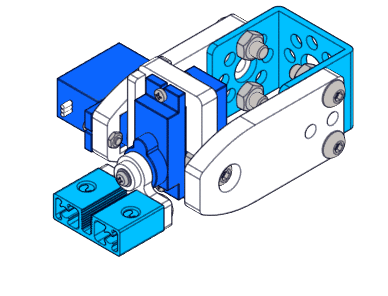
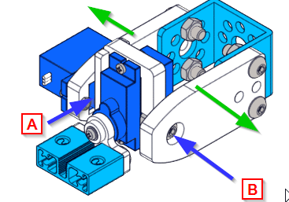

Garra y el brazo articulado
En esta sección vamos a utilizar la minigarra junto con el brazo articulado para dar más potencial a nuestra construcción, si colocamos el brazo tal y como está en la foto, nos permite mover el eje en los ejes Y y X, para el eje Z se puede utilizar el movimiento de giro propio de mBot con las ruedas.

La minigarra tiene un servo, y el brazo articulado tiene 2 servos, en total 3 servos, por lo tanto tenemos que utilizar 2 adaptadores RJ45, dejando libre un slot, esto nos ocupa dos puertos, el otro puerto utilizaremos el sensor de línea pues nos permitirá mover el mBot por el camino que deseemos, y el otro puerto podemos utilizarlo para la matriz o para el sensor distancia
Nosotros elegiremos la matriz, pues el sensor de distancia nos ha dado problemas (seguramente por los picos provocados por los servos).
La garra no es muy fuerte, igual que el brazo, por lo tanto NO FORZARLO CON PESOS ELEVADOS, se romperán los engranajes de plástico interiores de los servos (ver Ojo con los servos), nosotros recomendamos un rollo de cartón por ejemplo higiénico pero de diámetro inferior, se puede hacer casero con un folio y celo.

OJO con el brazo articulado: Su construcción es compleja, no es recomendable delegarlo a los alumnos: La U formada por la parte metáliza y las piezas de plástico transparente, si están algo abierto (flechas verdes) hace que el relé A que está enmedio de la U se caiga constantemente, hay que ajustar la U lo suficiente para que entre el relé primero entrando el relé A, luego colocar el tornillo B y finalmente el relé exterior, en ese orden, de lo contrario estaremos obligados a abrir la U para colocar el relé A y se caerá constantemente.
